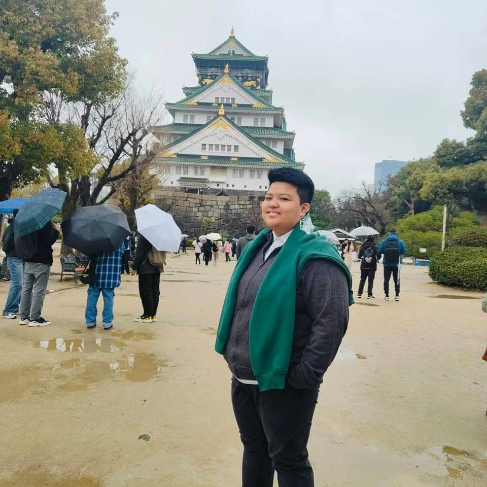

BSIT - Mobile and Web Applications | 2nd Year

Hello! My name is Mherylle Ann G. Pascual, a first-year BSIT student majoring in Mobile and Web Applications. I am currently learning web development, programming, and different IT skills. I enjoy exploring how technology works and applying it in real-life situations. I am passionate about improving my knowledge and becoming successful in the IT field.
I believe you only live once, so I try to work hard and make the most out of every opportunity. My goal is to build a better future and move to countries like the United States, Canada, or Australia, where I can grow, feel more accepted, and build a life with my partner.
I studied from nursery to grade school at La Consolacion College Manila. I attended several high schools including San Sebastian Recoletos Manila, Holy Trinity Academy Manila, and St. Mary Academy Manila. I completed senior high school at STI College. I also studied at De La Salle–College of Saint Benilde for one semester, continued in Canada at the Southern Alberta Institute of Technology for one and a half years, and I am currently taking a Bachelor of Science in Information Technology major in Mobile and Web Applications at National University.
I enjoy traveling, learning about different cultures, playing games, and watching movies. I also like exploring new experiences, learning new things, and spending time relaxing with music and coffee to recharge.
My future goal is to continue my studies in Canada or the United States and eventually build a better life there with my partner. I also plan to earn certifications such as Cisco and CompTIA to pursue a career as a network engineer. I am committed to learning, growing, and working hard to achieve my dreams.
Email: mpascual@gmail.com
Phone: +63 917 567 1145
Location: Manila, Philippines